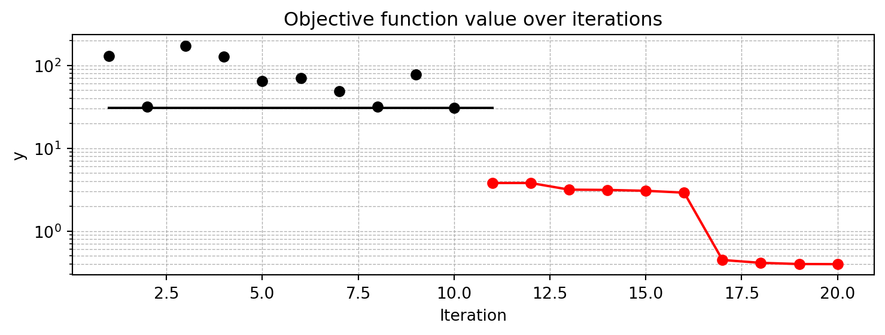
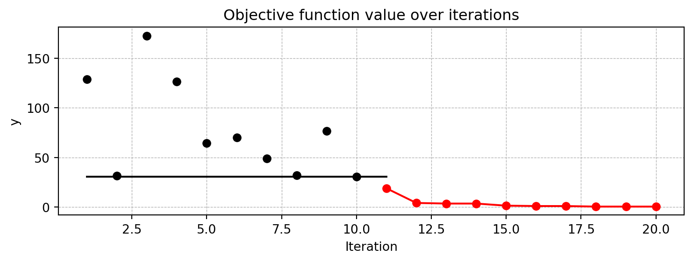
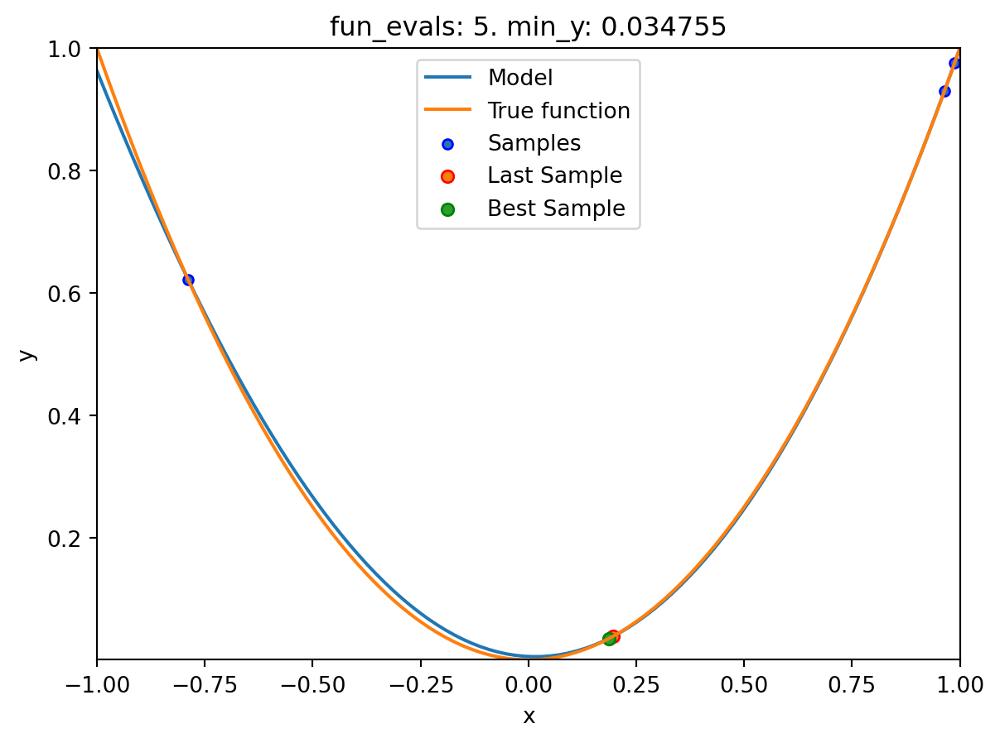
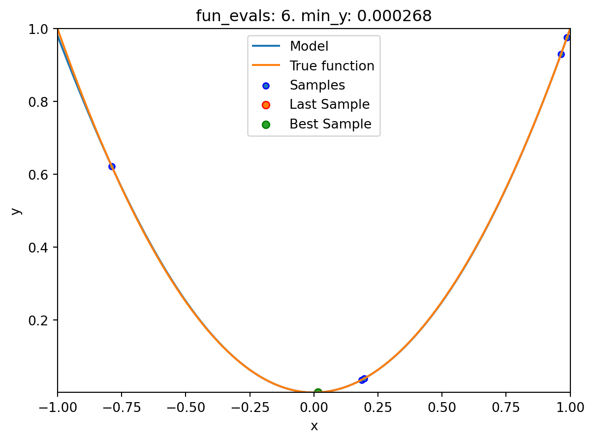
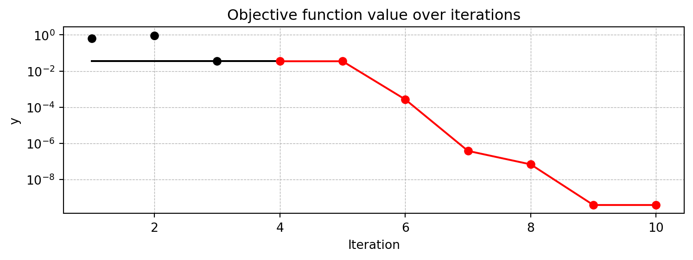
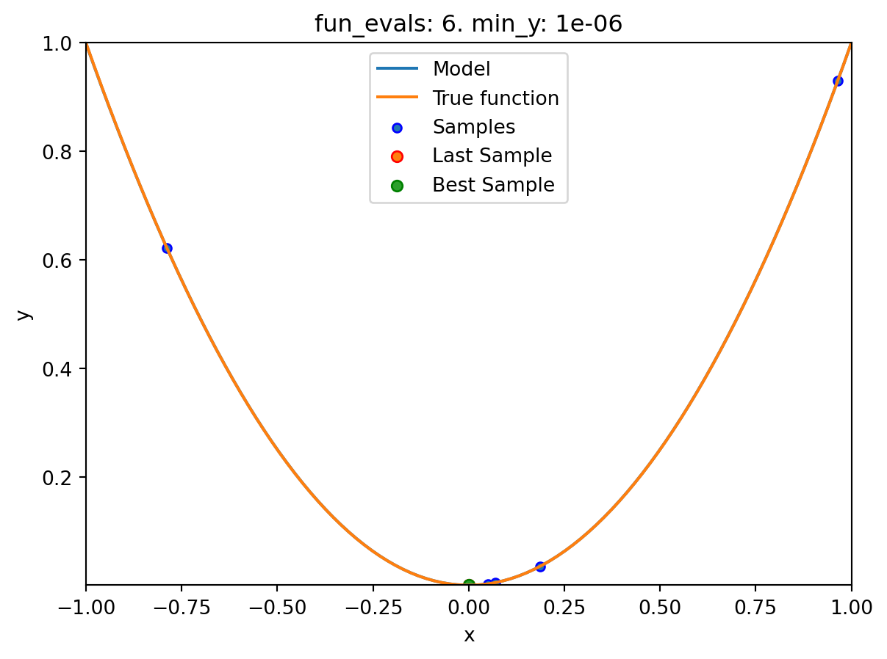
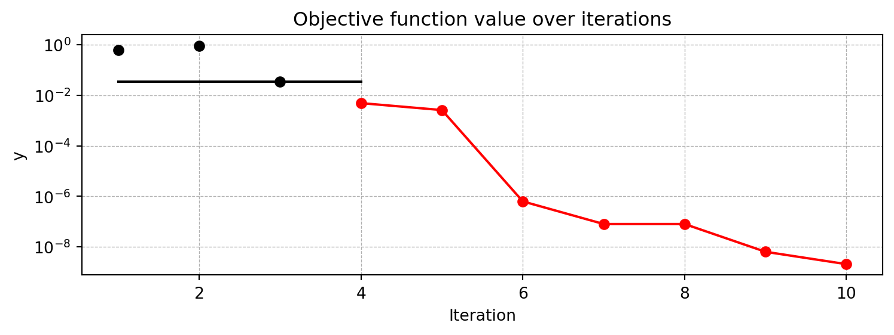
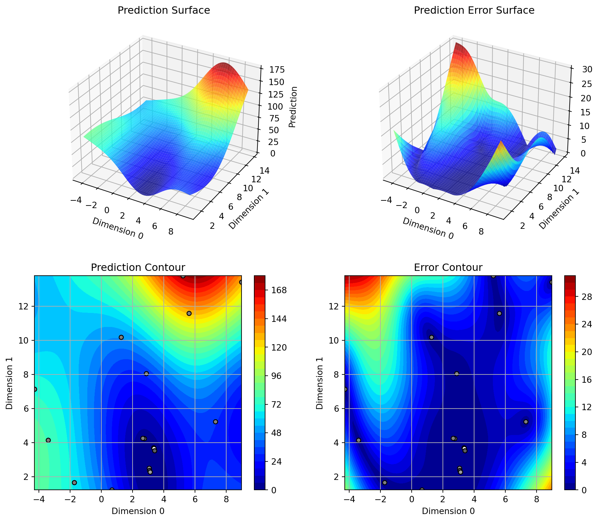
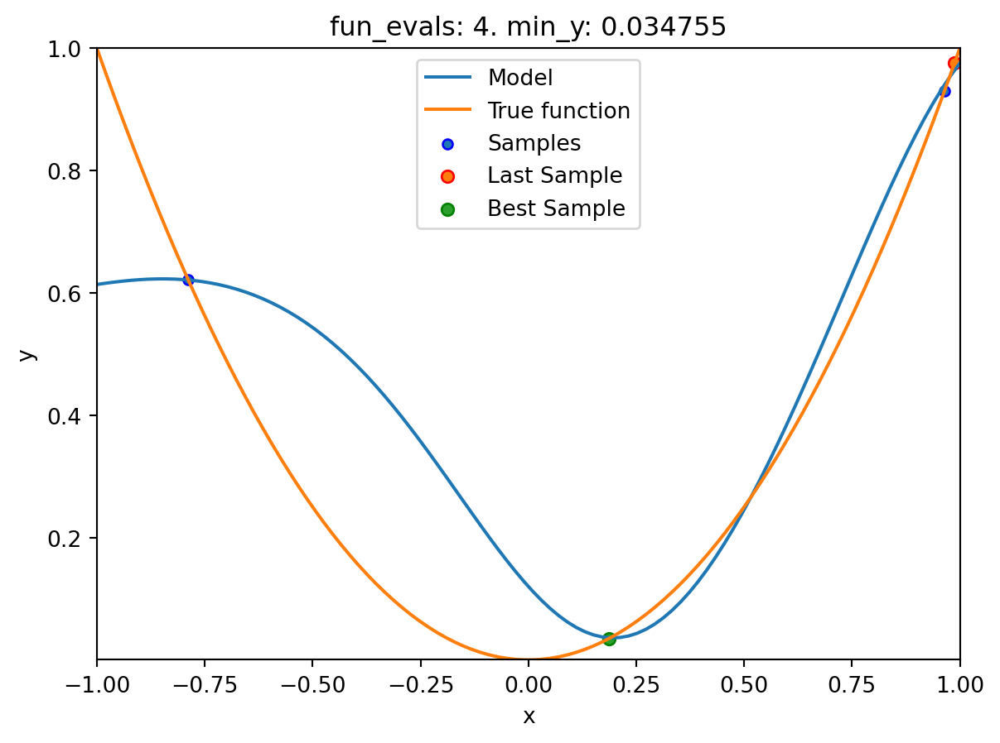
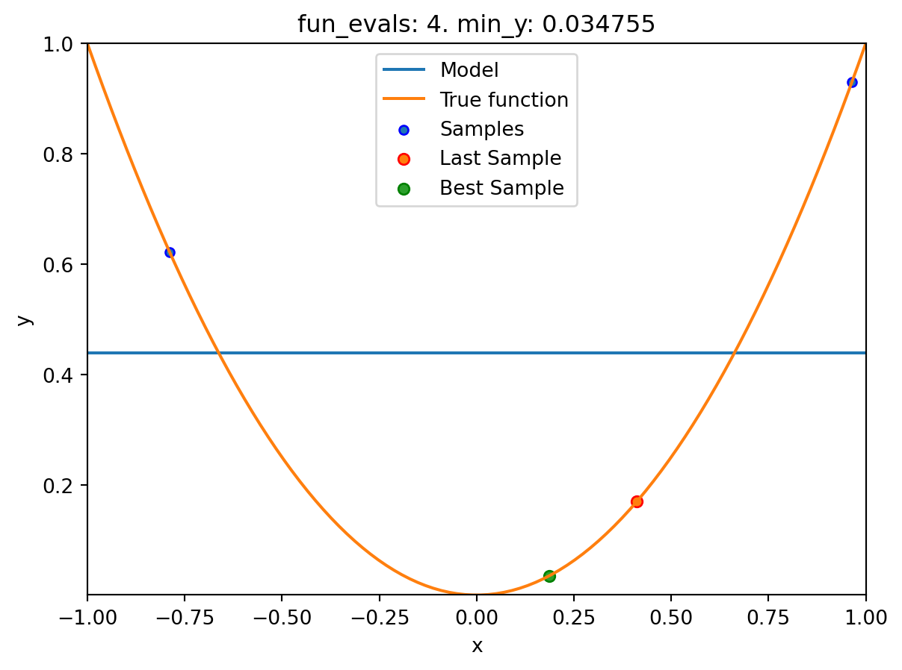

import numpy as np
from math import inf
from spotPython.fun.objectivefunctions import analytical
from spotPython.spot import spot10 Using sklearn Surrogates in spotPython
Besides the internal kriging surrogate, which is used as a default by spotPython, any surrogate model from scikit-learn can be used as a surrogate in spotPython. This chapter explains how to use scikit-learn surrogates in spotPython.
10.1 Example: Branin Function with spotPython’s Internal Kriging Surrogate
10.1.1 The Objective Function Branin
The
spotPythonpackage provides several classes of objective functions.We will use an analytical objective function, i.e., a function that can be described by a (closed) formula.
Here we will use the Branin function:
y = a * (x2 - b * x1**2 + c * x1 - r) ** 2 + s * (1 - t) * np.cos(x1) + s, where values of a, b, c, r, s and t are: a = 1, b = 5.1 / (4*pi**2), c = 5 / pi, r = 6, s = 10 and t = 1 / (8*pi).It has three global minima:
f(x) = 0.397887 at (-pi, 12.275), (pi, 2.275), and (9.42478, 2.475).
from spotPython.fun.objectivefunctions import analytical
fun = analytical().fun_branin
TensorBoard
Similar to the one-dimensional case, which was introduced in Section Section 7.5, we can use TensorBoard to monitor the progress of the optimization. We will use the same code, only the prefix is different:
from spotPython.utils.init import fun_control_init, design_control_init
PREFIX = "04"
fun_control = fun_control_init(
PREFIX=PREFIX,
lower = np.array([-5,-0]),
upper = np.array([10,15]),
fun_evals=20,
max_time=inf)
design_control = design_control_init(
init_size=10)10.1.2 Running the surrogate model based optimizer Spot:
spot_2 = spot.Spot(fun=fun,
fun_control=fun_control,
design_control=design_control)spot_2.run()spotPython tuning: 3.146824136952164 [######----] 55.00%
spotPython tuning: 3.146824136952164 [######----] 60.00%
spotPython tuning: 3.146824136952164 [######----] 65.00%
spotPython tuning: 3.146824136952164 [#######---] 70.00%
spotPython tuning: 1.1487233101571483 [########--] 75.00%
spotPython tuning: 1.0236891516766402 [########--] 80.00%
spotPython tuning: 0.41994270072214057 [########--] 85.00%
spotPython tuning: 0.40193544341108023 [#########-] 90.00%
spotPython tuning: 0.3991519598268951 [##########] 95.00%
spotPython tuning: 0.3991519598268951 [##########] 100.00% Done...
<spotPython.spot.spot.Spot at 0x3cc13edd0>10.1.3 TensorBoard
Now we can start TensorBoard in the background with the following command:
tensorboard --logdir="./runs"We can access the TensorBoard web server with the following URL:
http://localhost:6006/The TensorBoard plot illustrates how spotPython can be used as a microscope for the internal mechanisms of the surrogate-based optimization process. Here, one important parameter, the learning rate \(\theta\) of the Kriging surrogate is plotted against the number of optimization steps.
10.1.4 Print the Results
spot_2.print_results()min y: 0.3991519598268951
x0: 3.1546575195040987
x1: 2.285931113926263[['x0', 3.1546575195040987], ['x1', 2.285931113926263]]10.1.5 Show the Progress and the Surrogate
spot_2.plot_progress(log_y=True)
spot_2.surrogate.plot()
10.2 Example: Using Surrogates From scikit-learn
- Default is the
spotPython(i.e., the internal)krigingsurrogate. - It can be called explicitely and passed to
Spot.
from spotPython.build.kriging import Kriging
S_0 = Kriging(name='kriging', seed=123)- Alternatively, models from
scikit-learncan be selected, e.g., Gaussian Process, RBFs, Regression Trees, etc.
# Needed for the sklearn surrogates:
from sklearn.gaussian_process import GaussianProcessRegressor
from sklearn.gaussian_process.kernels import RBF
from sklearn.tree import DecisionTreeRegressor
from sklearn.ensemble import RandomForestRegressor
from sklearn import linear_model
from sklearn import tree
import pandas as pd- Here are some additional models that might be useful later:
S_Tree = DecisionTreeRegressor(random_state=0)
S_LM = linear_model.LinearRegression()
S_Ridge = linear_model.Ridge()
S_RF = RandomForestRegressor(max_depth=2, random_state=0)10.2.1 GaussianProcessRegressor as a Surrogate
- To use a Gaussian Process model from
sklearn, that is similar tospotPython’sKriging, we can proceed as follows:
kernel = 1 * RBF(length_scale=1.0, length_scale_bounds=(1e-2, 1e2))
S_GP = GaussianProcessRegressor(kernel=kernel, n_restarts_optimizer=9)The scikit-learn GP model
S_GPis selected forSpotas follows:surrogate = S_GPWe can check the kind of surogate model with the command
isinstance:
isinstance(S_GP, GaussianProcessRegressor) Trueisinstance(S_0, Kriging)True- Similar to the
Spotrun with the internalKrigingmodel, we can call the run with thescikit-learnsurrogate:
fun = analytical(seed=123).fun_branin
spot_2_GP = spot.Spot(fun=fun,
fun_control=fun_control,
design_control=design_control,
surrogate = S_GP)
spot_2_GP.run()spotPython tuning: 18.865121449825782 [######----] 55.00%
spotPython tuning: 4.06700305855078 [######----] 60.00%
spotPython tuning: 3.461906927549384 [######----] 65.00%
spotPython tuning: 3.461906927549384 [#######---] 70.00%
spotPython tuning: 1.3280944252046556 [########--] 75.00%
spotPython tuning: 0.9548334920645392 [########--] 80.00%
spotPython tuning: 0.9344485781421579 [########--] 85.00%
spotPython tuning: 0.39916716809341857 [#########-] 90.00% spotPython tuning: 0.3982254000779708 [##########] 95.00%
spotPython tuning: 0.3982254000779708 [##########] 100.00% Done...
<spotPython.spot.spot.Spot at 0x3d16c1510>spot_2_GP.plot_progress()
spot_2_GP.print_results()min y: 0.3982254000779708
x0: 3.1499822680266343
x1: 2.268811272474469[['x0', 3.1499822680266343], ['x1', 2.268811272474469]]10.3 Example: One-dimensional Sphere Function With spotPython’s Kriging
- In this example, we will use an one-dimensional function, which allows us to visualize the optimization process.
show_models= Trueis added to the argument list.
from spotPython.fun.objectivefunctions import analytical
fun_control = fun_control_init(
lower = np.array([-1]),
upper = np.array([1]),
fun_evals=10,
max_time=inf,
show_models= True,
tolerance_x = np.sqrt(np.spacing(1)))
fun = analytical(seed=123).fun_sphere
design_control = design_control_init(
init_size=3)spot_1 = spot.Spot(fun=fun,
fun_control=fun_control,
design_control=design_control)
spot_1.run()

spotPython tuning: 0.03475493366922229 [####------] 40.00% 
spotPython tuning: 0.03475483461229862 [#####-----] 50.00% 
spotPython tuning: 0.03475338954992179 [######----] 60.00% 
spotPython tuning: 0.03437475313644103 [#######---] 70.00% spotPython tuning: 0.015290217643803946 [########--] 80.00% spotPython tuning: 0.0017932523576966073 [#########-] 90.00% 
spotPython tuning: 8.771851669068651e-06 [##########] 100.00% Done...
10.3.1 Results
spot_1.print_results()min y: 8.771851669068651e-06
x0: 0.002961731194600322[['x0', 0.002961731194600322]]spot_1.plot_progress(log_y=True)
- The method
plot_modelplots the final surrogate:
spot_1.plot_model()10.4 Example: Sklearn Model GaussianProcess
- This example visualizes the search process on the
GaussianProcessRegressionsurrogate fromsklearn. - Therefore
surrogate = S_GPis added to the argument list.
fun = analytical(seed=123).fun_sphere
spot_1_GP = spot.Spot(fun=fun,
fun_control=fun_control,
design_control=design_control,
surrogate = S_GP)
spot_1_GP.run()spotPython tuning: 0.004925671374769521 [####------] 40.00% spotPython tuning: 0.002612062924748803 [#####-----] 50.00% 
spotPython tuning: 3.6666409852957783e-07 [######----] 60.00% spotPython tuning: 4.638244203084832e-08 [#######---] 70.00% spotPython tuning: 3.2711094860544125e-09 [########--] 80.00% spotPython tuning: 2.2493573831304313e-10 [#########-] 90.00% spotPython tuning: 2.2493573831304313e-10 [##########] 100.00% Done...
spot_1_GP.print_results()min y: 2.2493573831304313e-10
x0: 1.499785779079943e-05[['x0', 1.499785779079943e-05]]spot_1_GP.plot_progress(log_y=True)
spot_1_GP.plot_model()
10.5 Exercises
10.5.1 1. A decision tree regressor: DecisionTreeRegressor
- Describe the surrogate model. Use the information from the scikit-learn documentation.
- Use the surrogate as the model for optimization.
10.5.2 2. A random forest regressor: RandomForestRegressor
- Describe the surrogate model. Use the information from the scikit-learn documentation.
- Use the surrogate as the model for optimization.
10.5.3 3. Ordinary least squares Linear Regression: LinearRegression
- Describe the surrogate model. Use the information from the scikit-learn documentation.
- Use the surrogate as the model for optimization.
10.5.4 4. Linear least squares with l2 regularization: Ridge
- Describe the surrogate model. Use the information from the scikit-learn documentation.
- Use the surrogate as the model for optimization.
10.5.5 5. Gradient Boosting: HistGradientBoostingRegressor
- Describe the surrogate model. Use the information from the scikit-learn documentation.
- Use the surrogate as the model for optimization.
10.5.6 6. Comparison of Surrogates
Use the following two objective functions
- the 1-dim sphere function
fun_sphereand - the two-dim Branin function
fun_branin:
for a comparison of the performance of the five different surrogates:
spotPython’s internal KrigingDecisionTreeRegressorRandomForestRegressorlinear_model.LinearRegressionlinear_model.Ridge.
- the 1-dim sphere function
Generate a table with the results (number of function evaluations, best function value, and best parameter vector) for each surrogate and each function as shown in Table 10.1.
surrogate |
fun |
fun_evals |
max_time |
x_0 |
min_y |
Comments |
|---|---|---|---|---|---|---|
Kriging |
fun_sphere |
10 | inf |
|||
Kriging |
fun_branin |
10 | inf |
|||
DecisionTreeRegressor |
fun_sphere |
10 | inf |
|||
| … | … | … | … | |||
Ridge |
fun_branin |
10 | inf |
- Discuss the results. Which surrogate is the best for which function? Why?
10.6 Selected Solutions
10.6.1 Solution to Exercise Section 10.5.5: Gradient Boosting
10.6.1.1 Branin: Using SPOT
import numpy as np
from math import inf
from spotPython.fun.objectivefunctions import analytical
from spotPython.utils.init import fun_control_init, design_control_init
from spotPython.spot import spot- The Objective Function Branin
fun = analytical().fun_branin
PREFIX = "BRANIN"
fun_control = fun_control_init(
PREFIX=PREFIX,
lower = np.array([-5,-0]),
upper = np.array([10,15]),
fun_evals=20,
max_time=inf)
design_control = design_control_init(
init_size=10)- Running the surrogate model based optimizer
Spot:
spot_2 = spot.Spot(fun=fun,
fun_control=fun_control,
design_control=design_control)
spot_2.run()spotPython tuning: 3.146824136952164 [######----] 55.00%
spotPython tuning: 3.146824136952164 [######----] 60.00%
spotPython tuning: 3.146824136952164 [######----] 65.00%
spotPython tuning: 3.146824136952164 [#######---] 70.00%
spotPython tuning: 1.1487233101571483 [########--] 75.00%
spotPython tuning: 1.0236891516766402 [########--] 80.00%
spotPython tuning: 0.41994270072214057 [########--] 85.00%
spotPython tuning: 0.40193544341108023 [#########-] 90.00%
spotPython tuning: 0.3991519598268951 [##########] 95.00%
spotPython tuning: 0.3991519598268951 [##########] 100.00% Done...
<spotPython.spot.spot.Spot at 0x3d33c9550>- Print the results
spot_2.print_results()min y: 0.3991519598268951
x0: 3.1546575195040987
x1: 2.285931113926263[['x0', 3.1546575195040987], ['x1', 2.285931113926263]]- Show the optimization progress:
spot_2.plot_progress(log_y=True)
- Generate a surrogate model plot:
spot_2.surrogate.plot()
10.6.1.2 Branin: Using Surrogates From scikit-learn
- The
HistGradientBoostingRegressormodel fromscikit-learnis selected:
# Needed for the sklearn surrogates:
from sklearn.ensemble import HistGradientBoostingRegressor
import pandas as pd
S_XGB = HistGradientBoostingRegressor()- The scikit-learn XGB model
S_XGBis selected forSpotas follows:surrogate = S_XGB. - Similar to the
Spotrun with the internalKrigingmodel, we can call the run with thescikit-learnsurrogate:
fun = analytical(seed=123).fun_branin
spot_2_XGB = spot.Spot(fun=fun,
fun_control=fun_control,
design_control=design_control,
surrogate = S_XGB)
spot_2_XGB.run()spotPython tuning: 30.69410528614059 [######----] 55.00%
spotPython tuning: 30.69410528614059 [######----] 60.00%
spotPython tuning: 30.69410528614059 [######----] 65.00%
spotPython tuning: 30.69410528614059 [#######---] 70.00%
spotPython tuning: 1.3263745845108854 [########--] 75.00%
spotPython tuning: 1.3263745845108854 [########--] 80.00%
spotPython tuning: 1.3263745845108854 [########--] 85.00%
spotPython tuning: 1.3263745845108854 [#########-] 90.00%
spotPython tuning: 1.3263745845108854 [##########] 95.00%
spotPython tuning: 1.3263745845108854 [##########] 100.00% Done...
<spotPython.spot.spot.Spot at 0x3d6687e10>- Print the Results
spot_2_XGB.print_results()min y: 1.3263745845108854
x0: -2.872730773493426
x1: 10.874313833535739[['x0', -2.872730773493426], ['x1', 10.874313833535739]]- Show the Progress
spot_2_XGB.plot_progress(log_y=True)- Since the
sklearnmodel does not provide aplotmethod, we cannot generate a surrogate model plot.
10.6.1.3 One-dimensional Sphere Function With spotPython’s Kriging
- In this example, we will use an one-dimensional function, which allows us to visualize the optimization process.
show_models= Trueis added to the argument list.
from spotPython.fun.objectivefunctions import analytical
fun_control = fun_control_init(
lower = np.array([-1]),
upper = np.array([1]),
fun_evals=10,
max_time=inf,
show_models= True,
tolerance_x = np.sqrt(np.spacing(1)))
fun = analytical(seed=123).fun_sphere
design_control = design_control_init(
init_size=3)spot_1 = spot.Spot(fun=fun,
fun_control=fun_control,
design_control=design_control)
spot_1.run()
spotPython tuning: 0.03475493366922229 [####------] 40.00% 
spotPython tuning: 0.03475483461229862 [#####-----] 50.00% 
spotPython tuning: 0.03475338954992179 [######----] 60.00% spotPython tuning: 0.03437475313644103 [#######---] 70.00% 
spotPython tuning: 0.015290217643803946 [########--] 80.00% 
spotPython tuning: 0.0017932523576966073 [#########-] 90.00% 
spotPython tuning: 8.771851669068651e-06 [##########] 100.00% Done...
- Print the Results
spot_1.print_results()min y: 8.771851669068651e-06
x0: 0.002961731194600322[['x0', 0.002961731194600322]]- Show the Progress
spot_1.plot_progress(log_y=True)
- The method
plot_modelplots the final surrogate:
spot_1.plot_model()10.6.1.4 One-dimensional Sphere Function With Sklearn Model HistGradientBoostingRegressor
- This example visualizes the search process on the
HistGradientBoostingRegressorsurrogate fromsklearn. - Therefore
surrogate = S_XGBis added to the argument list.
fun_control = fun_control_init(
lower = np.array([-1]),
upper = np.array([1]),
fun_evals=10,
max_time=inf,
show_models= True,
tolerance_x = np.sqrt(np.spacing(1)))
fun = analytical(seed=123).fun_sphere
design_control = design_control_init(
init_size=3)
spot_1_XGB = spot.Spot(fun=fun,
fun_control=fun_control,
design_control=design_control,
surrogate = S_XGB)
spot_1_XGB.run()
spotPython tuning: 0.0018828816523185745 [####------] 40.00% spotPython tuning: 0.0018828816523185745 [#####-----] 50.00% spotPython tuning: 0.0018828816523185745 [######----] 60.00% spotPython tuning: 0.0018828816523185745 [#######---] 70.00% spotPython tuning: 0.0018828816523185745 [########--] 80.00% spotPython tuning: 0.0018828816523185745 [#########-] 90.00% 
spotPython tuning: 0.0018828816523185745 [##########] 100.00% Done...
spot_1_XGB.print_results()min y: 0.0018828816523185745
x0: 0.04339218423078717[['x0', 0.04339218423078717]]spot_1_XGB.plot_progress(log_y=True)spot_1_XGB.plot_model()10.7 Jupyter Notebook
Note
- The Jupyter-Notebook of this lecture is available on GitHub in the Hyperparameter-Tuning-Cookbook Repository